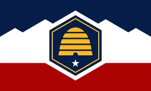

Merari M. Gonzalez
About Me
My name is Merari M. Gonzalez, I'm originally from B.C. Mexico, and have been residing in Utah EU since I was 13. I'm a licensed Barber, and a Softwore Development Student. I'm a mom of 3 boys named Kingston, Gavin and Maddox, who often challenge me to become a better person than I was before. I'm so very grateful for all the blessings that I have in my life, and that too challenges me to be a better human being.
------------------------------------------------

Utah is located in United States of America. The capital of UT is Salt Lake City. Utah became the 45th member of the union on January 4, 1896. Salt Lake City is the world headquarters of the Church of Jesus Christ of Latter-day Saints, and the spiritual home of adherents throughout the world. Utah is also known for the Middle Rockies in the northeast comprise the Uinta Mountains,one of the few mountain ranges in the United States running in an east-west direction, and the Wasatch Range.
Web Dev Resources
- Dev.to Comunity
- Smashing Magazine
- CSS Tricks
- Udemy
- Image Placeholder